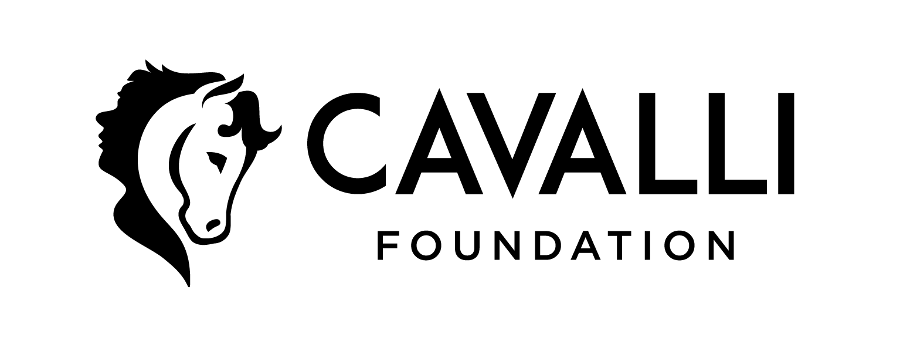
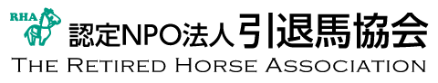

Fundación Cavalli

Visitar
Organización española sin ánimo de lucro que comenzó su actividad en 2012 en Alhama De Murcia, Murcia.
Su misión es rescatar, acoger y rehabilitar caballos, ponis, burros y otros animales en granja. Además, promueven la adopción responsable y fomentan la educación y la concienciación sobre el bienestar animal.
Thoroughbred Aftercare Alliance
Visitar
La Thoroughbred Aftercare Alliance es una organización sin ánimo de lucro que se dedica a acreditar, inspeccionar y apoyar a los centros de acogida y rehabilitación de caballos de carreras retirados en los Estados Unidos. Fundada en 2011, la TAA trabaja para garantizar que los caballos de carreras tengan una vida digna y segura después de su carrera en las pistas.
Retired Horse Association

Visitar
La Retired Horse Association (RHA) es una organización japonesa sin ánimo de lucro que se dedica a la protección y el bienestar de los caballos retirados de las carreras. Fundada en 1997, la RHA trabaja con el soporte de sus patrocinadores para asegurar que los caballos retirados tengan una vida digna y segura después de su carrera en las pistas, inclusive ofreciendo ayuda a aquellos que quieran adoptar un caballo retirado para llevarlo a sus granjas o establos.
 Perfil
Perfil